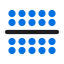
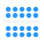
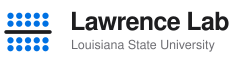

A and B from the first round, a hybrid of the two, and two marks drawn to a stricter brief: one idea each, simple geometry, legible at 16 px and in one colour.
One discrete bottlebrush: a backbone with five identical side chains in blue. The home-page DBP reduced to a symbol.



The dispersity symbol on an ink tile, with one blue bead for a single species. Instantly read by any polymer chemist. The strongest favicon of the set.
B's letter built from A's beads. Every bead is identical, so the symbol for dispersity is drawn in a dispersity of one. The bar of the Đ doubles as a backbone. Keeps the tile, so it works as an app icon and avatar.
A four by four field of identical beads, with the L of Lawrence picked out in ink. Monogram, uniformity and order in one geometric mark. Survives one colour, embroidery and a 16 px favicon.
Four identical brushes interlock into a square around an open centre. Identical parts make an ordered whole, which is the assembly work in one image. Abstract enough to own, simple enough to draw from memory.
All marks are SVG in ink #1D1D1F and the lab blue, with no gradients or shadows. Once a direction is chosen, the lettering gets converted to outlines and the mark goes into the header, the browser tab and slide templates.